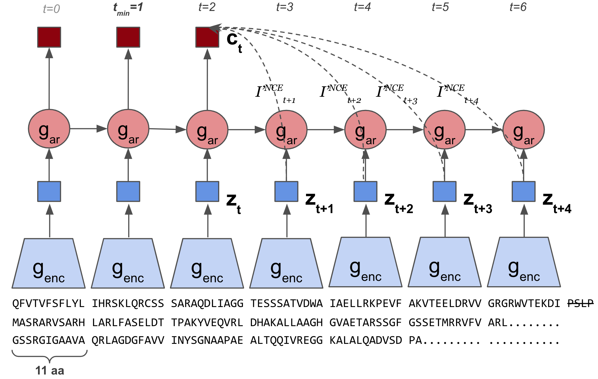

Discovering molecular features of intrinsically disordered regions by using evolution for contrastive learning
AX Lu, AX Lu, I Pritišanac, T Zarin, JD Forman-Kay, AM Moses
bioRxiv
Learned embeddings from deep learning to visualize and predict protein sets
Christian Dallago, Konstantin Schütze, Michael Heinzinger, Tobias Olenyi, Maria Littmann, Amy X Lu, Kevin K Yang, Seonwoo Min, Sungroh Yoon, James T Morton, Burkhard Rost
Current Protocols 1 (5), e113
|

|
Self-Supervised Contrastive Learning of Protein Representations by Mutual Information Maximization
Amy X. Lu, Haoran Zhang, Marzyeh Ghassemi, Alan Moses
Machine Learning for Computational Biology (MLCB), 2020
arXiv / Poster
CPCProt uses contrastive learning to learn a parameter-efficient way of embedding proteins, and performs competitively with large language models.
|
|
|
Self-Supervised Contrastive Learning of Protein Representations by Mutual Information Maximization
Amy X. Lu, Haoran Zhang, Marzyeh Ghassemi, Alan Moses
Machine Learning for Computational Biology (MLCB), 2020
arXiv / Poster
CPCProt uses contrastive learning to learn parameter-efficient embeddings of proteins.
|